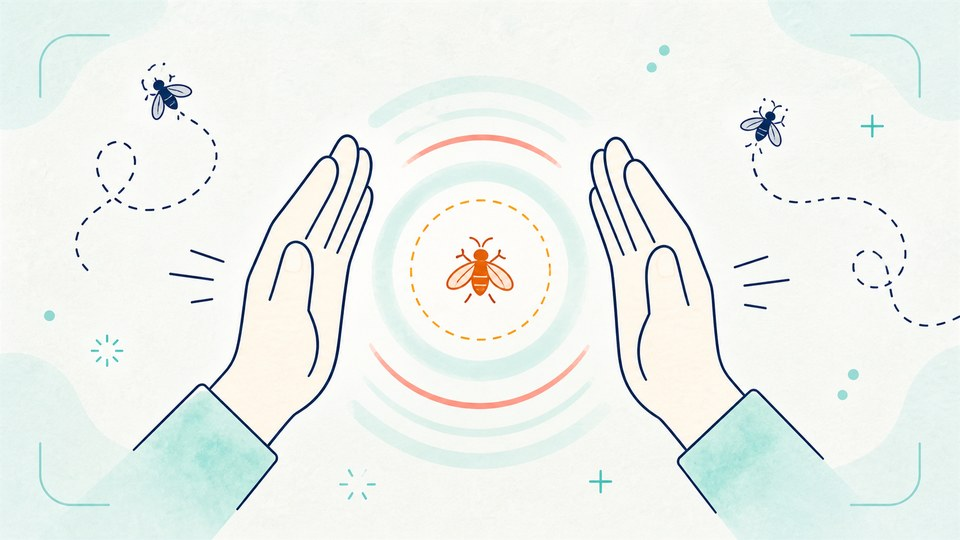
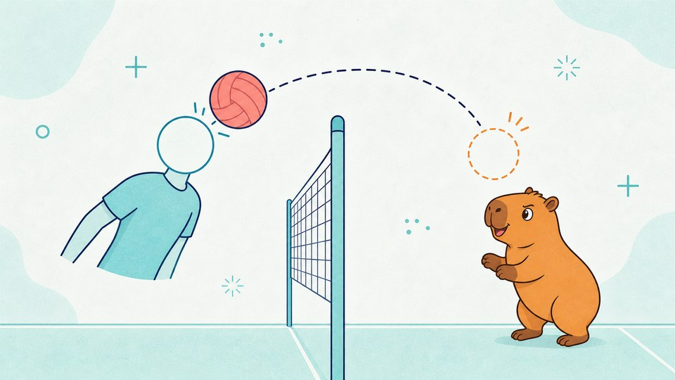
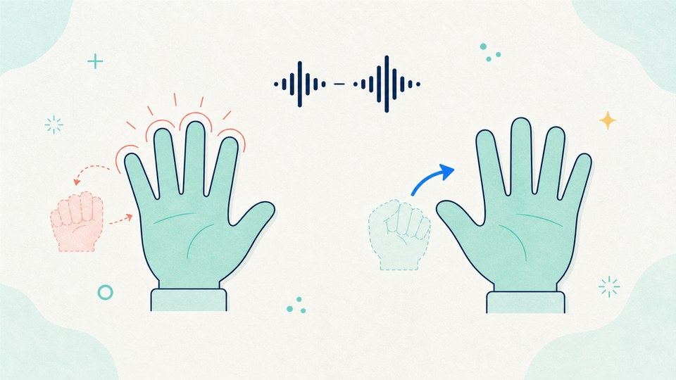
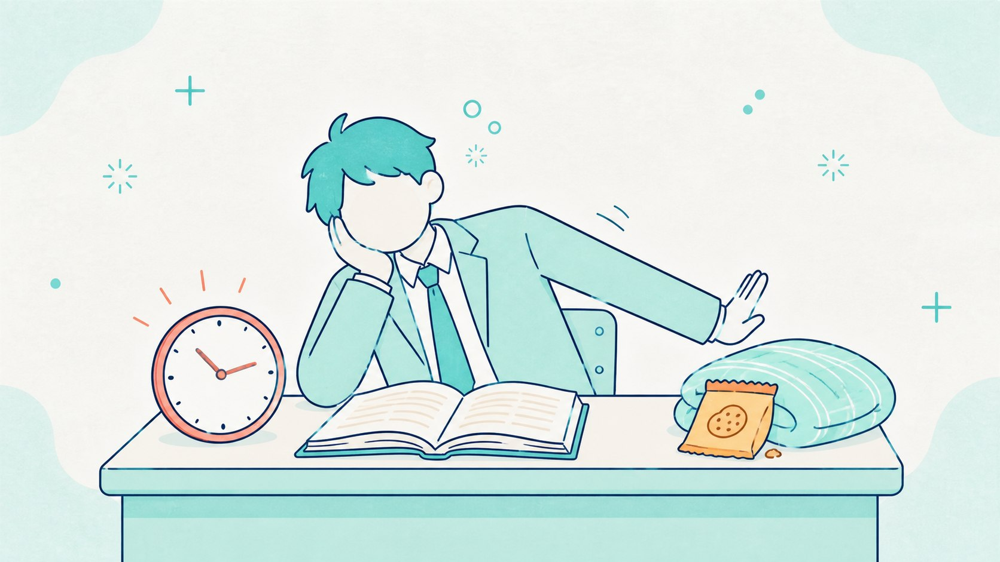

Icebreaking
아이스브레이킹 웹앱
첫 수업이나 모둠 활동을 시작할 때 짧게 쓰는 활동 모음입니다.

짝짝짝! 박수로 파리잡기
카메라 앞에서 양손으로 박수를 쳐서 날아다니는 파리를 잡습니다. 60초 동안 몇 마리를 잡는지 겨루고, 잘 잡을수록 파리가 빨라집니다.

머리콩! 카피바라 배구
카메라로 상반신과 머리를 인식해 헤딩으로 카피바라 또는 친구와 겨룹니다. 영상 위에서 머리 판정 원을 확인하며, 카메라가 없으면 키보드로도 참여할 수 있습니다.

오른손 펴! 왼손은 그대로!
음성으로 나오는 손 모양 명령을 듣고 그대로 따라 합니다. "~하지 마"가 붙은 명령에 속지 않아야 하고, 카메라가 두 손의 모양과 움찔까지 판정합니다.

고3 2학기 수업 안 듣는 이유 월드컵
고3 2학기 특유의 대사 52장 가운데 더 “고3 2학기답다” 싶은 카드를 고릅니다. 빠른 16강과 본선 32강을 지원합니다.